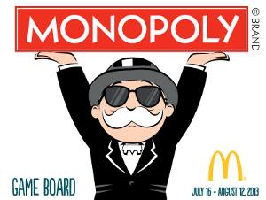

Auteurs : Joubert Aymeric
Delerue Axel
Introduction :
Le Monopoly est un jeu édité par la société américaine Hasbro.
Le plateau du jeu est composé de cases prenant en compte plusieurs villes.
Ces villes sont divisées en plusieurs groupes.
Le principe du jeu, consiste à lancer des dés pour avancer sur un plateau où les villes sont achetables par le joueur.
Effectivement, un joueur peut posséder autant de propriétés qu'il le souhaite et peu ainsi gagner de l'argent lors du passage d'autre joueur sur ses propriétés.
Les propriétés ont bien sûr un coût, mais qui doit logiquement être inférieur à la recette que celles-ci peuvent engendrer.
Règles du jeu :
Au commencement, tout les joueurs sont positionnés sur la case "Départ" et ont automatiquement une certaine somme d'argent (150000).
Le premier joueur commence.
Il tire deux dés, qui lui donne un résultat. Ce résultat est le nombre de cases où le joueur doit se déplacer. Si un joueur lance les dés et fait un 12, il peut rejouer.
Le déplacement est possible uniquement dans le sens préconisé par la flèche sur la case départ.
Lorsque le joueur tombe sur une case de type "Chance", celui-ci pioche une carte qui peut lui donner un bonus soit un malus.
Lorsque le joueur tombe sur une case de type "Aller en prison", celui-ci par directement sur la case prison et doit faire un lancer double pour pouvoir en sortir.
Lorsque le joueur tombe sur une case de type "Terrain" (Une ville), une gare ou un monopole (Comme la compagnie des eaux), celui-ci peut l'acheter si aucun autre utilisateur ne l'a déjà fait.
Si celui-ci l'achète, il possède donc la case. Si un autre joueur tombe sur cette case, il devra donner de l'argent au joueur propriétaire.
Evidemment, s'il ne l'achète pas, n'importe quel autre joueur à le droit de l'acheter.
Le coût de la case et le versement au propriétaire est calculé selon la "qualité" de la ville.
Pour pouvoir créer des maisons et hôtels sur ses propriétés, il faut posséder toutes les villes du même groupe (Même couleur).
Les joueurs passant sur la case payeront donc plus cher à son propriétaire.
Informations supplémentaires :
Un joueur peut s'il le souhaite hypothéquer ses biens pour récupérer de l'argent (Dans le cas du jeu, l'hypothèque se fait lorsque le joueur passe en solde négatif).
Lorsqu'un joueur passe par la case départ, il ressoit une somme d'argent (20000), si celui-ci part en prison il ne passe pas par la case départ.
Un joueur peut évidemment jouer tout seul, mais il n'y a pas d'intêret, ce jeu se joue au minimum à deux joueurs.
Un joueur a perdu lorqu'il n'a plus d'argent ni de propriétés.